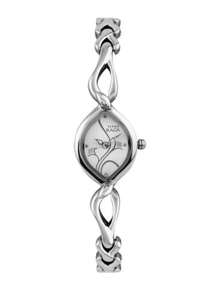

Titan Company Limited (earlier known as Titan Industries Limited) is a joint venture between the Tata Group and the Tamil Nadu Industrial Development Corporation (TIDCO) that commenced operations in 1984 under the name Titan Watches Limited. In 1994, Titan diversified into jewellery with Tanishq and subsequently into eyewear with Titan Eyeplus. In 2013, Titan entered the fragrances segment and, later that year, it ventured into the helmets category under its brand Fastrack. Today, Titan Company is Tata Group’s largest consumer company.
About the company:-
The Titan Watch Project began with the signing of a joint venture of Tata Industries with the Tamil Nadu Industrial Development Corporation (TIDCO) in June 1984. Titan Watches Ltd. commenced production in the year 1986 and hit the market in March 1987 with its brand ‘Titan’. In 1993, The name of the company was changed with effect from 21 September from Titan Watches, Ltd. to Titan Industries Ltd., in view of the fact that the company's products consisted of not only watches but also jewellery. In 1996, Titan Industries Ltd. entered the jewellery segment with a brand launch "Tanishq" . A brief joint venture with the American brand, Timex, between 1992 and 1998, focusing on market mass.
Titan Men Black Dial WatchPRODUCT CODE:- TI01
BUY NOW@1399 |
Titan Men Black Dial Watch 90020KD02JPRODUCT CODE:- TI02
BUY NOW@1549 |
Titan Men Black Dial Watch NE9453KM02JPRODUCT CODE:- TI03
 BUY NOW@1499 |
Titan Men Black Multifunction Analogue Watch 9487NP01JPRODUCT CODE:- TI04
 BUY NOW@1199 |
Titan Men Green Dial Watch 90050QL01JPRODUCT CODE:- TI05
 BUY NOW@1899 |
Titan Men Green Dial Watch 90050QL01JPRODUCT CODE:- TI06
BUY NOW@1999 |
Titan Men Green Dial Watch 90050QL01JPRODUCT CODE:- TI07
BUY NOW@1299 |
Titan Raga Women Silver-Toned Dial Watch NE2455SM01PRODUCT CODE:- TI08
BUY NOW@1199 |